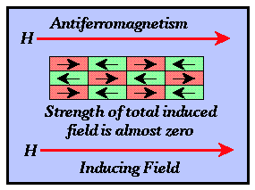

pg 11
Mechanisms for Induced Magnetization
The nature of magnetization material is in general complex, governed by atomic properties, and well beyond the scope of this series of notes. Suffice it to say, there are three types of magnetic materials: paramagnetic, diamagnetic, and ferromagnetic.
- Diamagnetism - Discovered by Michael Faraday in 1846. This form of magnetism is a fundamental property of all materials and is caused by the alignment of magnetic moments associated with orbital electrons in the presence of an external magnetic field. For those elements with no unpaired electrons in their outer electron shells, this is the only form of magnetism observed. The susceptibilities of diamagnetic materials are relatively small and negative. Quartz and salt are two common diamagnetic earth materials.
- Paramagnetism - This is a form of magnetism associated with elements that have an odd number of electrons in their outer electron shells. Paramagnetism is associated with the alignment of electron spin directions in the presence of an external magnetic field. It can only be observed at relatively low temperatures. The temperature above which paramagnetism is no longer observed is called the Curie Temperature. The susceptibilities of paramagnetic substances are small and positive.
- Ferromagnetism - This is a special case of paramagnetism in which there is an
almost perfect alignment of electron spin directions within large portions of the material
referred to as domains. Like paramagnetism, ferromagnetism is observed only at
temperatures below the Curie temperature. There are three varieties of ferromagnetism.
- Pure Ferromagnetism - The directions of electron spin alignment within each
domain are almost all parallel to the direction of the external inducing field. Pure
ferromagnetic substances have large (approaching 1) positive susceptibilities.
Ferrromagnetic minerals do not exist, but iron, cobalt, and nickel are examples of common
ferromagnetic elements.
- Antiferromagnetism - The directions of electron alignment within adjacent domains
are opposite and the relative abundance of domains with each spin direction is
approximately equal. The observed magnetic intensity for the material is almost zero.
Thus, the susceptibilities of antiferromagnetic materials are almost zero. Hematite is an
antiferromagnetic material.

- Ferromagnetism - Like antiferromagnetic materials, adjacent domains produce
magnetic intensities in opposite directions. The intensities associated with domains
polarized in a direction opposite that of the external field, however, are weaker. The
observed magnetic intensity for the entire material is in the direction of the inducing
field but is much weaker than that observed for pure ferromagnetic materials. Thus, the
susceptibilities for ferromagnetic materials are small and positive. The most important
magnetic minerals are ferromagnetic and include magnetite, titanomagnetite, ilmenite, and
pyrrhotite.
- Pure Ferromagnetism - The directions of electron spin alignment within each
domain are almost all parallel to the direction of the external inducing field. Pure
ferromagnetic substances have large (approaching 1) positive susceptibilities.
Ferrromagnetic minerals do not exist, but iron, cobalt, and nickel are examples of common
ferromagnetic elements.